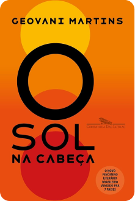
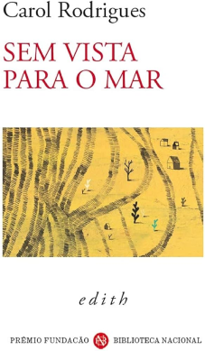
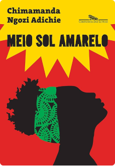
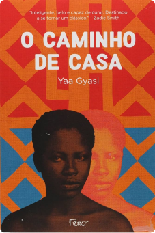

"Historias que inspiram , conhecimento que transforma!"
A leitura é uma viagem que não requer passaporte. — Anônimo.
"Você nunca sabe a força que tem,
até que a sua única alternativa é ser forte ."
— Clarice Lispector.

Geovani Martins
O Sol na Cabeça" (2018), retrata a realidade das periferias cariocas com uma linguagem vibrante e urgente. Sua escrita aborda questões sociais, violência e o cotidiano dos jovens nas favelas.
Carol Rodrigues
Sem Vista para o Mar (2014), Carol se destaca pela linguagem experimental e inventiva, com histórias que misturam poesia e narrativa, muitas vezes abordando o deslocamento e a fluidez das fronteiras.


Chimamanda Ngozi
Meio Sol Amarelo (2006), Chimamanda explora temas como racismo, imigração, identidade e feminismo. Sua obra traz à tona questões sociais e políticas da Nigéria, além da experiência da diáspora africana no Ocidente.
Yaa Gyasi
Sua obra de estreia, "O Caminho de Casa" (2016), narra a história de duas meio-irmãs e seus descendentes ao longo de 300 anos, desde o tráfico de escravos na África até a vida nos EUA. Gyasi é uma das vozes mais promissoras a explorar as conexões entre o passado e o presente.

Deb Caletti
Meio Sol Amarelo (2006), Chimamanda explora temas como racismo, imigração, identidade e feminismo. Sua obra traz à tona questões sociais e políticas da Nigéria, além da experiência da diáspora africana no Ocidente.